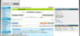
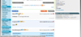
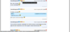
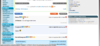
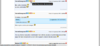

JVCMaster
JVCMaster est une extension navigateur compatible avec Google Chrome 21+, Chromium 18+, Mozilla Firefox 14+, Opera 12+, ajoutant des fonctionnalités aux forums de Jeuxvideo.com.
Via un panneau de gestion d'extensions, activez ou non des fonctionnalités d'un simple clic.


Maintenant, vous pouvez :
- Afficher des informations d'un pseudo à côté de celu left(sexe, rang)
- Afficher la CDV du pseudo dans une lightbox, lors du clic sur celui-ci
- Afficher les images de NoelShack dans une lightbox
- Cacher les posts des bots (flood)
- Citer un ou des post(s)
- Cacher un ou des posts, et les posts d'un pseudo
- Sauvegarder vos topics préférés!
Extensions disponibles
Des infos sur un pseudo?
Soyez informé du sexe et du rang d'un pseudo par un simple coup d'oeil
![[IMAGE : On peut remarquer qu'ici, il y a une fille de rang Rubis, et des garçons de rang Or, Argent, et encore Rubis]](img/extensions/cdvinformation.png)
Vous voulez citer un post?
Un bouton vous facilite la tâche! Enfin une manière propre pour citer un post!
Marre des bots?
Les spams des bots sont automatiquement détecté et caché
![[IMAGE : L'antibot en action]](img/extensions/antibot.png)
Flemme de rechercher dans le forum ou dans vos favoris de navigateur?
Gérer facilement vos topics favoris en 2 clics!
![[IMAGE : Un clic, vous voilà sur le topic!]](img/extensions/topicfavorites3.png)
![[IMAGE : Plus besoin d'avoir ce topic dans vos favoris?]](img/extensions/topicfavorites4.png)
![[IMAGE : Hop, il n'est plus!]](img/extensions/topicfavorites5.png)
Un post, ou un pseudo que vous n'aimez pas?
Avec 2 boutons, cachez simplement un post, ou tout les posts d'un pseudo
![[IMAGE : Vous voulez cacher un post?]](img/extensions/hidepost1.png)  
  ![[IMAGE : Ses posts sont maintenant cachés]](img/extensions/hidepost4.png)
Une transition plus classe pour un visionnage de CDV?
Cliquez sur le pseudo, et sa CDV s'ouvrira dans une Lightbox

![[IMAGE : Et ça s'ouvre!]](img/extensions/showcdv2.png)
Marre du nouveau NoelShack? Vous ne le verrez plus!
Cliquer sur un lien ou une miniature NoelShack, et l'image s'ouvre dans une Lightbox
![[IMAGE : Cliquez sur un lien ou un aperçu Noelshack]](img/extensions/visio_noelshack1.png)
![[IMAGE : L'image s'ouvre!]](img/extensions/visio_noelshack2.png)